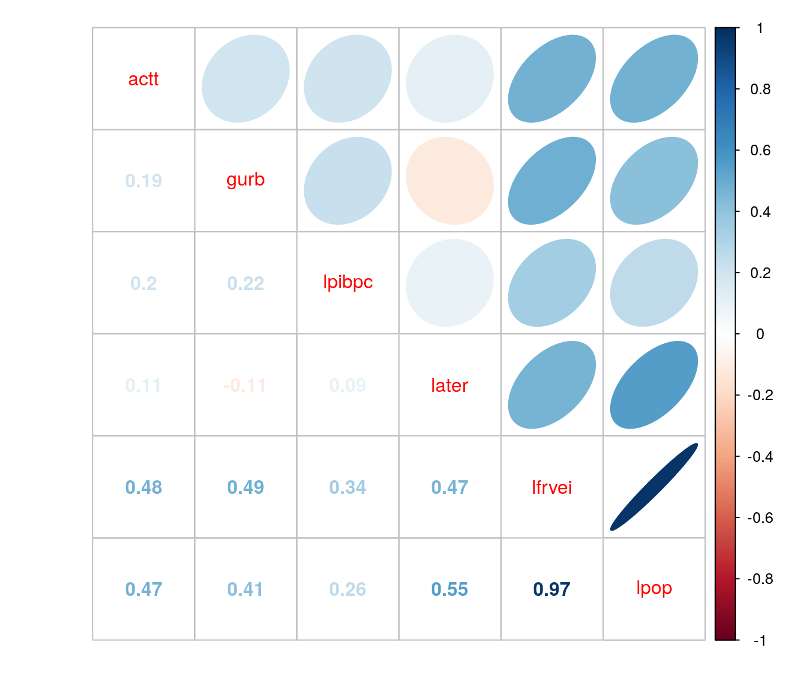
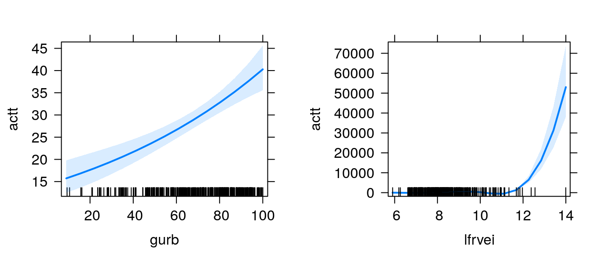
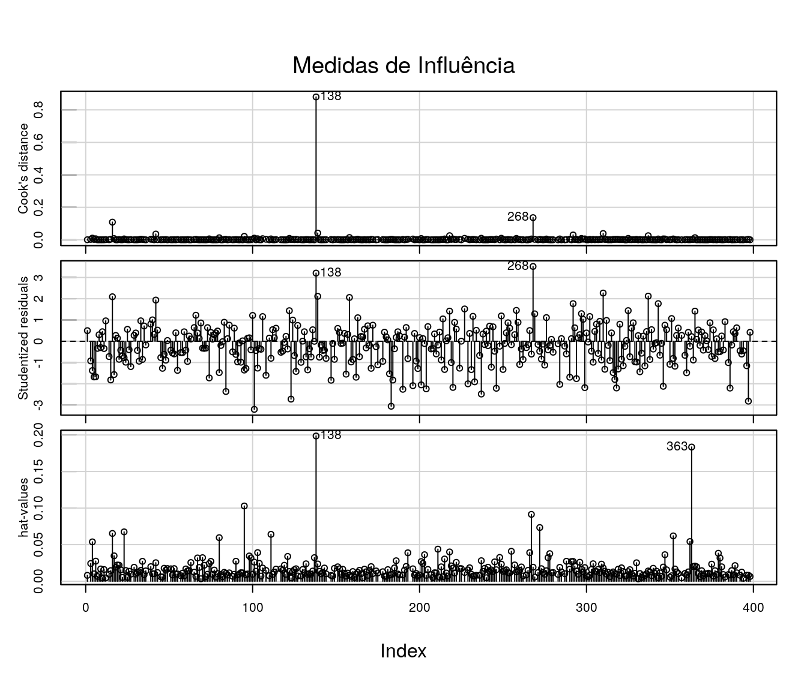

|
\[\textbf{Lineu Alberto Cavazani de Freitas}\] \[\textbf{Prof. Cesar Augusto Taconeli}\] \[\textbf{Modelos Lineares Generalizados (CE225)}\]
Modelos de Regressão para Dados de Contagem
Número de Acidentes de Trânsito em Municípios do Paraná em 2010
1 Dados
Os dados extraídos da base de dados pública do Ipardes e dizem respeito ao número de acidentes de trânsito em municípios do Paraná no ano de 2010. O Batalhão de Polícia de Trânsito - BPTRAN define como acidente de trânsito todo evento ocorrido na via pública, inclusive calçadas, decorrente do trânsito de veículos e pessoas, que resulta em danos humanos e materiais.
Compreende: colisões entre veículos, choque com objetos fixos, capotamentos, tombamentos, atropelamentos, queda de pedestres e ciclistas, etc. Além disso toda ocorrência fortuita ou danosa, envolvendo veículos em circulação, ou parados, respectivos ocupantes, pedestres e objetos móveis ou fixos.
Os dados consideram apenas os acidentes de trânsito ocorridos nas vias municipais (não foram incluídos acidentes ocorridos nas Rodovias Estaduais e Federais).
Cada linha da base diz respeito a 1 dos 399 municípios do estado do Paraná, foram coletadas as variáveis:
actt - Número de acidentes de trânsito no município
pibpc - Produto Interno Bruto per Capita do município.
ater - Área Territorial (km²).
gurb - Grau de Urbanização, percentagem da população da área urbana em relação à população total.
frvei - Frota total de veículos.
pop - População Censitári.
O objetivo da análise foi modelar o número de acidentes de trânsito em função das demais variáveis.
As primeiras 6 linhas da base de dados tem a seguinte forma:
## cidade actt pibpc ater gurb frvei pop
## 1 Abati\xe1 18 10414 227.898 73.83 2332 7764
## 2 Adrian\xf3polis NA 10680 1341.334 32.31 1549 6376
## 3 Agudos do Sul 6 10535 191.282 34.12 3142 8270
## 4 Almirante Tamandar\xe9 190 6850 191.114 95.82 33697 103204
## 5 Altamira do Paran\xe1 1 8683 387.315 49.58 1101 4306
## 6 Alto Para\xedso 1 11468 1045.718 55.27 1053 32062 Análise Descritiva
Vamos realizar uma breve análise descritiva dos dados.
2.1 Medidas Resumo
Usando a função summary vamos verificar o mínimo, o máximo, a mediana e os quartis das variáveis explicativas em estudo:
## cidade actt pibpc
## \xc2ngulo : 1 Min. : 1.0 Min. : 6305
## Abati\xe1 : 1 1st Qu.: 6.0 1st Qu.: 10285
## Adrian\xf3polis : 1 Median : 21.0 Median : 12919
## Agudos do Sul : 1 Mean : 234.8 Mean : 15074
## Almirante Tamandar\xe9: 1 3rd Qu.: 69.5 3rd Qu.: 16864
## Alt\xf4nia : 1 Max. :25109.0 Max. :197335
## (Other) :393 NA's :44
## ater gurb frvei pop
## Min. : 61.14 Min. : 9.35 Min. : 367 Min. : 1409
## 1st Qu.: 214.45 1st Qu.: 55.27 1st Qu.: 1766 1st Qu.: 5037
## Median : 351.12 Median : 71.90 Median : 3447 Median : 9026
## Mean : 500.95 Mean : 68.39 Mean : 12636 Mean : 26177
## 3rd Qu.: 624.38 3rd Qu.: 84.22 3rd Qu.: 7264 3rd Qu.: 17274
## Max. :3177.60 Max. :100.00 Max. :1197974 Max. :1751907
## Na variável cidade são elencados todos os municípios do Paraná. Para a variável resposta (número de acidentes de trânsito) nota-se um número considerável de dados faltantes; em 44 municípios não há, por algum motivo, o número de acidentes de trânsito. Para as demais variáveis é evidente a grande amplitude das respostas observadas.
2.2 Boxplots
O boxplot é uma alternativa de análise descritiva para avaliação da distribuição dos dados.
par(mfrow=c(2,3))
for (i in 2:ncol(ipardes)) {
boxplot(ipardes[,i],
xlab = '',
ylab = '',
main = names(ipardes[i]),
las=1,
col = '#C8F9F3')
}Nota-se nas variáveis número de acidentes, PIB, frota e população a presença de um ponto discrepante, muito mais alto que os demais. Em alguns casos pode ser conveniente trabalhar com o log da variável para obter uma maior simetria, outra alternativa é remover os valores discrepantes.
2.3 Histogramas
O histograma é outra alternativa para observar a forma da distribuição dos dados.
library(ggplot2)
library(gridExtra)
g1 <- ggplot(ipardes, aes(x=actt)) + geom_histogram()+ xlab('Acidentes de Trânsito')+ ylab('')
g2 <- ggplot(ipardes, aes(x=pibpc)) + geom_histogram()+ xlab('PIB per capita')+ ylab('')
g3 <- ggplot(ipardes, aes(x=ater)) + geom_histogram()+ xlab('Área Territorial')+ ylab('')
g4 <- ggplot(ipardes, aes(x=gurb)) + geom_histogram()+ xlab('Grau de Urbanização')+ ylab('')
g5 <- ggplot(ipardes, aes(x=frvei)) + geom_histogram()+ xlab('Frota de Veículos')+ ylab('')
g6 <- ggplot(ipardes, aes(x=pop)) + geom_histogram()+ xlab('População')+ ylab('')
grid.arrange(g1, g2, g3, g4, g5, g6, nrow=2, ncol=3)Os histogramas mostram uma considerável assimetria nas variáveis pib per capita, área territorial, frota e população, nestas variáveis pode ser considerada uma transformação.
O gráfico que corresponde ao histograma do número de acidentes de trânsito por munícipio é consideravelmente assimétrico devido à presença de municípios com número de acidentes muito maior que os demais, algumas delas são:
## cidade actt pibpc ater gurb frvei pop
## 70 Cascavel 3555 18578 2091.401 94.36 157748 286205
## 95 Curitiba 25109 33177 435.495 100.00 1197974 1751907
## 121 Foz do Igua\xe7u 2660 24388 610.209 99.17 118804 256088
## 193 Londrina 5676 21360 1656.606 97.40 284867 506701
## 211 Maring\xe1 6644 23958 486.433 98.20 237656 357077
## 277 Ponta Grossa 3259 21497 2025.697 97.79 140331 311611
## 352 S\xe3o Jos\xe9 dos Pinhais 2241 65244 944.280 89.66 129319 2642102.4 Transformação das variáveis explicativas
Vamos aplicar uma transformação logaritmica nas variáveis apontadas como mais assimétricas na análise descritiva:
ipardes$lpibpc <- log(ipardes$pibpc)
ipardes$later <- log(ipardes$ater)
ipardes$lfrvei <- log(ipardes$frvei)
ipardes$lpop <- log(ipardes$pop)E verificar novamente a forma da distribuição das variáveis transformadas:
par(mfrow = c(1,4))
hist(ipardes$later, main = 'log(Área)', xlab = '', ylab = '', col = '#F3EBAB')
hist(ipardes$lfrvei, main = 'log(Frota)', xlab = '', ylab = '', col = '#F3EBAB')
hist(ipardes$lpibpc, main = 'log(PIB)', xlab = '', ylab = '', col = '#F3EBAB')
hist(ipardes$lpop, main = 'log(População)', xlab = '', ylab = '', col = '#F3EBAB')E agora sim verifica-se uma simetria bem maior na distribuição das covariáveis utilizadas.
2.5 Correlação
Nesta etapa vamos considerar as variáveis pib per capita, área territorial, frota e população transformadas.
A variável resposta do estudo possui dados faltantes, para resolver este problema é possível obter a correlação desta com as demais utilizando o argumento use da função cor
cor <- cor(ipardes[ , c(2,5,8,9,10,11)], use = "na.or.complete")
library(corrplot)
corrplot.mixed(cor, upper = "ellipse")
O correlograma aponta duas variáveis como mais correlacionadas com a resposta: o log da frota de veículos e o log da população. Nota-se também que essas duas variáveis são altamente correlacionadas entre si. Para fins de análise, ambas são possíveis candidatas à offssets.
2.6 Gráficos de Dispersão
A matriz de gráficos de dispersão evidencia a alta relação entre as variáveis log da frota de veículos e o log da população; quanto à variável resposta nota-se a presença de valores altos atípicos, distantes da nuvem de pontos.
3 Ajuste dos Modelos de Regressão
A variável considerada como resposta é o número de ocorrências de um evento, neste caso é o número de acidentes de trânsito; trata-se portanto de uma variável de contagem, ou seja, uma variável discreta com suporte no conjunto dos inteiros não negativos. Para problemas como este deve-se buscar uma distribuição que comporte tais características; comumente a primeira alternativa de modelagem via modelo linear generalizado faz uso da distribuição de Poisson com função de ligação logaritmica.
Os modelos de regressão para dados de contagem com distribuição de probabilidades Poisson para a resposta são escritos da seguinte forma:
\[ \newcommand{\undertilde}[1]{\underset{\widetilde{}}{#1}} \] \[y_{i}|\undertilde{x_{i}} \sim Poisson (\mu_{i})\]
\[ \newcommand{\undertilde}[1]{\underset{\widetilde{}}{#1}}\]
\[ g(\mu_{i}) = {\beta_{0}} + {\beta_{1}}\, x_{i1} + {\beta_{2}}\, x_{i2} + ... + {\beta_{p}}\, x_{ip}\]
Em que \(y_{i}\) é a variável resposta, \(x_{i1}, x_{i2}, ..., x_{ip}\) correspondem às variáveis explicativas.
Além disso, \(g(\mu_{i})\) é a função de ligação. Se trata de uma função real, monótona e diferenciável, que associa e lineariza a relação entre o componente aleatório e o sistemático do modelo. A função de ligação canônica para um GLM Poisson é a logaritmica. Vale lembrar que como se trata de uma contagem, os valores preditos na escala da resposta não podem ser negativos e cabe à função de ligação garantir a não negatividade dos valores preditos.
Caso o GLM Poisson não se ajuste bem há outras opções de distribuições para a resposta. Uma das alternativas mais utilizadas é a Binomial Negativa. O principal diferencial dessa distribuição em relação à Poisson é que a Binomial Negativa comporta casos em que há superdispersão, enquanto na Poisson o parâmetro de dispersão deve ser fixo e igual a 1 (equidispersão, média igual à variância).
Nas subseções seguintes são mostrados os ajustes dos Modelos Lineares Generalizados log-linear de Poisson e com distribuição Binomial Negativa para a resposta.
3.1 GLM com resposta Poisson
Vamos ajustar um Modelo Linear Generalizado Poisson com função de ligação logaritmica e com as covariáveis inclusas de forma aditiva no modelo. A expressão do modelo é dada por:
\[ \newcommand{\undertilde}[1]{\underset{\widetilde{}}{#1}} \]
\[y_{i}|\undertilde{x_{i}} \sim Poisson (\mu_{i})\]
\[ \newcommand{\undertilde}[1]{\underset{\widetilde{}}{#1}}\]
\[ log(\mu _{i}) = {\beta_{0}} + {\beta_{1}}\, lpibpc_{i} + {\beta_{2}}\, later_{i} + {\beta_{3}}\, gurb_{i} +\ {\beta_{4}}\, lfrvei_{i} + {\beta_{5}}\, lpop_{i}\]
No R, o modelo é declarado da seguinte forma:
3.2 GLM com resposta Binomial Negativa
Vamos ajustar um Modelo Linear Generalizado com distribuição Binomial negativa com função de ligação logaritimica. A expressão do modelo é igual ao do modelo Poisson, porém a distribuição da resposta tem forma diferente.
No R, o modelo é declarado da seguinte forma:
4 Escolha do Modelo
Para seleção de modelos diversas medidas podem ser utilizadas, em especial vamos utilizar a verossimilhança e o AIC dos modelos. vale lembrar que o modelo Binomial Negativo estima um parâmetro de dispersão que não existe no modelo Poisson.
ajuste = c('m1', 'm2')
aic = c(AIC(m1), AIC(m2))
verossimilhança = c(logLik(m1),logLik(m2))
data.frame(ajuste, aic, verossimilhança)## ajuste aic verossimilhança
## 1 m1 8533.970 -4260.985
## 2 m2 2980.105 -1483.052O modelo que apresentou menor AIC e maior verossimilhança foi o modelo Binomial Negativo. Adicionalmente, vamos verificar o comportamento dos gráficos meio Normais de probabilidades com envelopes simulados.
Esses gráficos permitem verificar a adequação do modelo ajustado mesmo que os resíduos não tenham uma aproximação adequada com a distribuição Normal. Sendo assim, neste tipo de gráfico espera-se, para um modelo bem ajustado, os pontos (resíduos) dispersos aleatoriamente entre os limites do envelope.
Deve-se ficar atento à presença de pontos fora dos limites do envelope ou ainda a pontos dentro dos limites porém apresentando padrões sistemáticos.
library(hnp)
par(mfrow = c(1,2))
hnp(m1, xlab = 'Percentil da N(0,1)',
ylab = 'Resíduos',
main = 'Poisson')
hnp(m2, xlab = 'Percentil da N(0,1)',
ylab = 'Resíduos',
main = 'Binomial Negativa')Nota-se pelas medidas de qualidade de ajuste e o comportamento dos resíduos no gráfico a total falta de aderência à distribuição de Poison; alterando a distribuição da resposta para Binomial Negativa obteve-se um ajuste satisfatório.
5 Modelo Escolhido
Vamos seguir as análises fazendo uso do modelo Binomial Negativo.
5.1 Resumo do Modelo
O modelo original foi ajustado usando todas as covariáveis disponíveis. Vamos verificar no resumo do modelo selecionado quais covariáveis são apontadas como significativas:
##
## Call:
## glm.nb(formula = actt ~ lpibpc + later + gurb + lfrvei + lpop,
## data = ipardes, init.theta = 3.664147641, link = log)
##
## Deviance Residuals:
## Min 1Q Median 3Q Max
## -3.1819 -0.8559 -0.1779 0.4794 3.0907
##
## Coefficients:
## Estimate Std. Error z value Pr(>|z|)
## (Intercept) -10.216771 0.891832 -11.456 < 2e-16 ***
## lpibpc 0.134996 0.083845 1.610 0.107
## later 0.055948 0.055061 1.016 0.310
## gurb 0.011501 0.002046 5.620 1.91e-08 ***
## lfrvei 1.171845 0.156376 7.494 6.69e-14 ***
## lpop 0.141566 0.168776 0.839 0.402
## ---
## Signif. codes: 0 '***' 0.001 '**' 0.01 '*' 0.05 '.' 0.1 ' ' 1
##
## (Dispersion parameter for Negative Binomial(3.6641) family taken to be 1)
##
## Null deviance: 5472.55 on 354 degrees of freedom
## Residual deviance: 382.48 on 349 degrees of freedom
## (44 observations deleted due to missingness)
## AIC: 2980.1
##
## Number of Fisher Scoring iterations: 1
##
##
## Theta: 3.664
## Std. Err.: 0.342
##
## 2 x log-likelihood: -2966.105O resumo do modelo ajustado indica que as variáveis grau de urbanização e log da frota de veículos foram significativas. No resumo é mostrado também o valor do parâmetro de dispersão (neste caso vale 3,6), muito maior que 1, o que explica a falta de ajuste à distribuição de Poisson.
5.2 Reajuste do Modelo
Como há um par de covariáveis altamente correlacionadas (log da frota e log da população), é válido inserir as covariáveis uma a uma no modelo para verificar sua significância na presença das outras; tal como o realizado pelo algoritmo stepwise. Notou-se que ao retirar a variável log da frota, o log da população se mostra significativo.
Sendo assim, o novo modelo fica da seguinte forma:
O resumo do novo modelo ajustado:
##
## Call:
## glm.nb(formula = actt ~ gurb + lfrvei, data = ipardes, init.theta = 3.615959105,
## link = log)
##
## Deviance Residuals:
## Min 1Q Median 3Q Max
## -3.0461 -0.8343 -0.1949 0.4698 3.2940
##
## Coefficients:
## Estimate Std. Error z value Pr(>|z|)
## (Intercept) -8.603487 0.231379 -37.183 < 2e-16 ***
## gurb 0.010333 0.001837 5.625 1.85e-08 ***
## lfrvei 1.340227 0.030368 44.133 < 2e-16 ***
## ---
## Signif. codes: 0 '***' 0.001 '**' 0.01 '*' 0.05 '.' 0.1 ' ' 1
##
## (Dispersion parameter for Negative Binomial(3.616) family taken to be 1)
##
## Null deviance: 5405.25 on 354 degrees of freedom
## Residual deviance: 383.23 on 352 degrees of freedom
## (44 observations deleted due to missingness)
## AIC: 2978.6
##
## Number of Fisher Scoring iterations: 1
##
##
## Theta: 3.616
## Std. Err.: 0.336
##
## 2 x log-likelihood: -2970.646O algoritmo indica que as variáveis grau de urbanização e log da frota são significativas e tem relação positiva com o número de acidentes de trânsito.
Agora, vamos realizar o teste da razão de verossimilhança do modelo inicial e do reduzido:
## Likelihood ratio tests of Negative Binomial Models
##
## Response: actt
## Model theta Resid. df 2 x log-lik.
## 1 gurb + lfrvei 3.615959 352 -2970.646
## 2 lpibpc + later + gurb + lfrvei + lpop 3.664148 349 -2966.105
## Test df LR stat. Pr(Chi)
## 1
## 2 1 vs 2 3 4.540832 0.2086769O p-valor do teste foi relativamente alto, portanto pode-se concluir que o modelo restrito se ajusta aos dados amostrais tão bem quanto o modelo considerando todas as covariáveis. Portanto o modelo final fica expresso por:
\[ \newcommand{\undertilde}[1]{\underset{\widetilde{}}{#1}} \]
\[y_{i}|\undertilde{x_{i}} \sim Binomial\; Negativa (\mu_{i}, \phi)\]
\[ \newcommand{\undertilde}[1]{\underset{\widetilde{}}{#1}}\]
\[ \log(\mu _{i}) = { -8.60349} + {0.01033}\, gurb_{i} + {1.34023}\, log(frvei_{i})\]
5.3 Medidas de Influência
Uma alternativa para verificação de medidas influentes está implementada no pacote car:
## Loading required package: carData##
## Attaching package: 'car'## The following object is masked from 'package:dplyr':
##
## recode## The following object is masked from 'package:purrr':
##
## someO primeiro gráfico apresenta os valores da distância de Cook para cada observação. A distância de Cook é uma medida de diferença das estimativas dos parâmetros do modelo ao considerar e ao desconsiderar uma particular observação no ajuste.
O segundo gráfico mostra os resíduos studentizados; um modelo bem ajustado apresenta estes resíduos dispersos aleatóriamente em torno de 0, entre -3 e 3 desvios.
O terceiro gráfico mostra os valores da matriz chapéu (H). Valores elevados são considerados potencialmente influentes. Os valores da matriz chapéu estão entre 0 e 1. A soma dos elementos da diagonal da matriz H equivale ao posto da matriz X de delineamento.
Com base nesses 3 gráficos, não há indicativos fortes de outliers ou observações influentes.
5.4 Resíduos Quantílicos Aleatorizados
Outra alternativa para avaliar a qualidade do ajuste é baseada nos resíduos quantílicos aleatorizados. A função qresiduals do pacote statmod extrai este tipo de resíduos do modelo
par(mfrow=c(1,2))
res <- qresiduals(m2.1)
plot(res)
residuos <- qresiduals(m2.1)
qqnorm(residuos)
qqline(residuos, col = 2)No gráfico da esquerda nota-se que os resíduos estão dispersos predominantemente em torno de 0 entre -2 e 2. Além disso, no gráfico a direita verifica-se que os resíduos apresentam razoável aderência à distribuição Normal. Há um leve indício de caudas pesadas; porém, no geral, parece que há um ajuste plausível.
5.5 Gráfico Normal de Probabilidades com Envelope Simulado
Vamos verificar o comportamento do gráfico Normal de probabilidades com envelope simulado para o modelo reajustado:
## Negative binomial model (using MASS package)Os resíduos estão dispersos no interior dos envelopes simulados, sem aparente padrão sistemático dando indício de que o modelo está bem ajustado.
5.6 Gráficos de Efeitos
A função effects, do pacote de mesmo nome, devolve os efeitos marginais de cada variável de um modelo ajustado; os gráficos de efeitos nos fornecem uma forma visual de observar como cada variável explicativa afeta a resposta, com as demais variáveis fixadas na média.
## Registered S3 methods overwritten by 'lme4':
## method from
## cooks.distance.influence.merMod car
## influence.merMod car
## dfbeta.influence.merMod car
## dfbetas.influence.merMod car## lattice theme set by effectsTheme()
## See ?effectsTheme for details.
6 Predição
Para fins de ilustração, vamos considerar os seguintes perfis para três municípios distintos:
Perfil 1:
- Grau de Urbanização = 10
- Log da frota de veículos = 8
Perfil 2
- Grau de Urbanização = 70
- Log da frota de veículos = 10
Perfil 3
- Grau de Urbanização = 100
- Log da frota de veículos = 12
E responder à seguinte pergunta: Qual é o número esperado de acidentes de trânsito em municípios com o Perfil 1, 2 e 3?
Utilizando a função predict para obter o número esperado de acidentes nos perfis:
## 1 2 3
## 9.222629 250.156084 4976.712891Portanto, o número esperado de acidentes de trânsito para um município fictício com o Perfil 1 é igual a 9; para um município com o Perfil 2 este número passa para 250, e no teceiro perfil o número esperado de acidentes é de 4976.
7 Outra Abordagem: Quase-Verossimilhança
Os modelos de quase-verossimilhança são uma forma de modelagem mais flexível quando comparada aos modelos lineares generalizados; o método consiste em especificar um modelo baseado aoenas na média e variância da distribuição tornando-o mais flexível, o que muitas vezes é o suficiente para acomodar superdispersão nos dados.
Tais como os estimadores de máxima verossimilhança, os estimadores de máxima quase-verossimilhança são assintóticamente não viciados, consistentes e normalmente distribuídos.
7.1 Ajuste do modelo
Vamos reajustar o modelo por quase-verossimilhança:
7.2 Diagnóstico
Com o modelo ajustado pode-se realizar a análise de diagnóstico:
7.2.1 Medidas de Influência
Vamos iniciar com a verificação de possíveis medidas influentes:
library(car)
influenceIndexPlot(mq, vars=c("Cook", "Studentized", "hat"), main="Medidas de Influência")
Uma das observações apontadas como fortemente influente é o município de Guaraqueçaba:
## cidade actt pibpc ater gurb frvei pop lpibpc later
## 138 Guaraque\xe7aba 5 7438 2315.733 34.09 367 7871 8.914357 7.747482
## lfrvei lpop
## 138 5.905362 8.970947.2.2 Resíduos
qqnorm(resid(mq, type = "deviance"),
pch = 20, main = "Resíduos do modelo de Quase-Verossimilhança", las = 1)
qqline(resid(mq, type = "deviance"), col = 2)Os resíduos componentes da Deviance para o modelo de Quase-Verossimilhança ajustado têm distribuição aproximadamente Normal.
Sendo assim, o modelo de Quase-Verossimilhança é mais uma alternativa para modelagem de dados de contagem sendo que esta, diferente das duas primeiras apresentadas, tem enfoque não paramétrico.
|
|

|
|
|

|